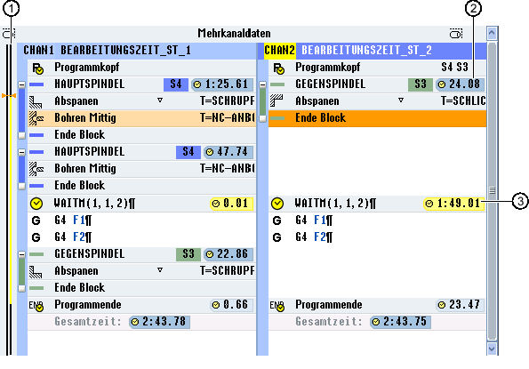

Nach der Simulation bzw. bei Abarbeitung des Programms im Automatikbetrieb wird Ihnen für je nach Einstellung die gemessene Bearbeitungszeit der Programmsätze bzw. Programmblöcke angezeigt.
Bei mehrkanaliger Anzeige werden an den Wartepunkten (WAIT-Marken) die auftretenden Wartezeiten angezeigt. So haben Sie einen Überblick über den zeitlichen Ablauf des Programms und können erste Optimierungen durchführen.
Am Ende des Programms wird für jeden Kanal die Gesamtlaufzeit angezeigt.
Bei der Zeitmessung wird die reale Zeit erfasst, d. h. Override u.ä. Aktionen gehen in die Zeitmessung mit ein.
Blöcke verschieben
Sie haben die Möglichkeit, an längeren Wartepunkten Programmblöcke einzuschieben, wenn es die Technologie erlaubt, und so Bearbeitungszeit einzusparen.
Zeitbezogene Ansicht
In der zeitbezogenen Ansicht werden Ihnen die Wartezeiten an den WAIT-Marken sowie die benötigten Bearbeitungszeiten an den Bearbeitungsabschnitten angezeigt. Ändern Sie das Programm, werden die Zeitangaben weiterhin an den entsprechenden WAIT-Marken bzw. den entsprechenden Blöcken gedimmt angezeigt.
Die ermittelten Zeiten gehen verloren, wenn Sie den Editor über den Softkey "Schließen" verlassen oder ein anderes Programm öffnen bzw. anwählen. Durch Simulieren werden die Zeiten neu ermittelt.
① | Zeitstrahl für jeden angezeigten Kanal Bearbeitungszeiten werden schwarz dargestellt, Wartezeiten gelb. Die aktuelle Cursorposition wird orange markiert. |
② | Bearbeitungszeit |
③ | Wartezeit auf das parallele Programm |
Zeitsynchrone Ansicht